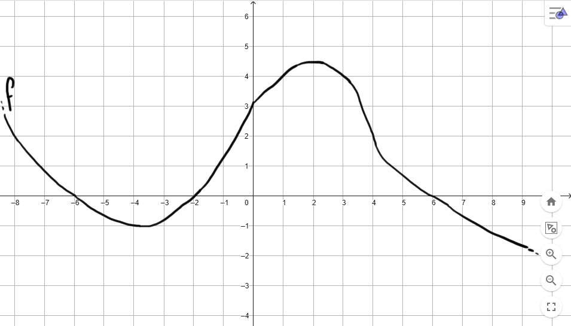

Consideriamo le due funzioni
\[
f(x) = 8x + 3 \qquad g(x) = \dfrac{-2x^2 - 1}{-4x + 3}
\]
Stabilire le coordinate del punto di intersezione tra i loro grafici.
Esercizio
Consideriamo il grafico della funzione \(f\) rappresentato in figura.

Stabilire per quali valori si ha
\[
\dfrac{f(x)}{-4x + 5} \leq 0
\]